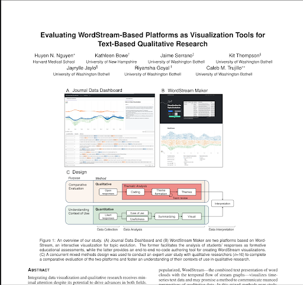

User Research Study
Evaluating Wordstream-Based Visualization Tools for Text-Based Qualitative Research
Overview
This was a collaborative user research study evaluating WordStream-based visualizations for text-based qualitative work.
Qualitative analysis still depends heavily on manual interpretation, while visualization support remains limited. WordStream helps researchers surface nuanced perspectives in qualitative datasets.
We recruited participants with STEM education research backgrounds and qualitative methods experience. The study compared two WordStream-based platforms—Journal Data Dashboard and WordStream Maker—using a mixed-method approach that combined visual evaluation with a questionnaire.
We began with four participants and planned to expand to ten. A Likert-scale instrument measured perceived ease of use and usefulness, while open-ended questions captured trust, intended use, and desired features.
Across quantitative and qualitative analysis, we identified clear preference patterns between the two platforms. Two themes emerged: participants valued controls that supported contextual exploration, and their evaluations reflected the workflows in which they used WordStream. Preliminary results suggest Journal Data Dashboard was preferred for ease of use and usefulness; the study is ongoing.
Research & Methodology
The study evaluated WordStream-based visualization tools within qualitative research workflows, focusing on how researchers interpret and apply visualizations to text data and what limitations they encounter.
We used a survey with a Likert scale to quantify perceived ease of use and usefulness. We then applied Thematic Analysis to surface patterns and insights not captured by agreement ratings.
Outputs
My contributions included analyzing results through a Thematic Analysis lens using Deedoose, and designing a symposium poster in Figma.
The work produced a research poster and a full paper, shown below, summarizing the study design, findings, and implications for using WordStream in text-based qualitative research.

Research paper — Evaluating Wordstream-Based Visualization Tools for Text-Based Qualitative Research.